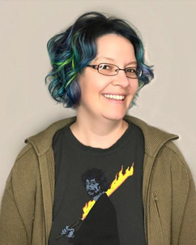
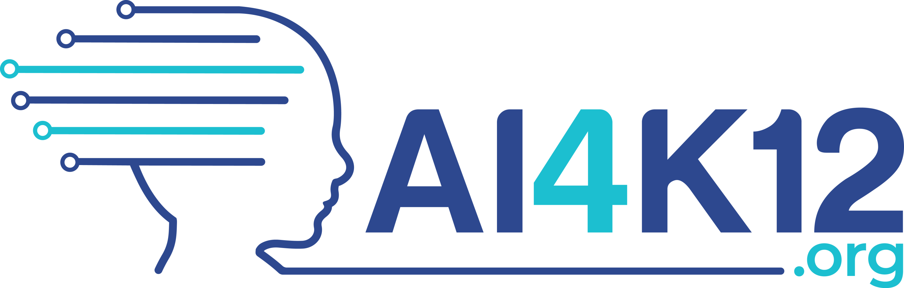
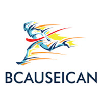

The DetectAIves Community
DetectAIves brings together faculty, graduate researchers, undergraduate students, community organizers, and older adult community members to explore how artificial intelligence is shaping everyday life.
Faculty and Graduate Researchers
The research team guides the vision, curriculum, and long-term development of DetectAIves. Faculty and graduate researchers support community partnerships, mentor student teams, and study how intergenerational learning can improve AI literacy and digital confidence.
Dr. Amanda Lazar

Dr. Caro Williams-Pierce
Dr. Galina Madjaroff Reitz
Dr. Tamara Clegg
Samarth Ashwathanarayana
PhD Student
Courtney Ray
Master's Student
Kibron Tesfatsion
Master's Student
Organizations and Collaborators
DetectAIves works with community organizations, educators, and local leaders who help shape workshops, recruit participants, and ensure the program reflects community needs.
Partner Organizations and Collaborators
Community Organization
Build programs, networks, and technology that help us stay connected, engaged, and fulfilled in the neighborhoods we call home.

Education Initiative
The initiative is developing (1) national guidelines for AI education for K-12, (2) an online, curated resource Directory to facilitate AI instruction, and (3) a community of practitioners, researchers, resource and tool developers focused on the AI for K-12 audience.

Community Organization
BCAUSEICAN's mission is to prevent socioeconomic disparities by equipping communities in need with STEM education.


TJ Rainsford
Praxis Impact
Speaker/Mentor

Sprinterns
The Winter 2025 Sprintern cohort developed hands-on projects focused on AI transparency, misinformation awareness, digital literacy, and accessible learning tools for older adults. Each student combined technical skills with community feedback to create projects with real-world value.
Lexie Leong
Sprintern, Winter 2025
Project: Validate AI

Darrell Cox
Sprintern, Winter 2025
Project: Bridging Generations Through AI
Navya Gunna
Sprintern, Winter 2025
Project: Artificial Intelligence and News Articles
Sarah Bamba
Sprintern, Winter 2025
Project: AI Eye
Katherine Alvarenga
Sprintern, Winter 2025
Project: AI Scams & Web Development
Their Work
Explore the student projects created during the Winter 2025 program, including websites, research reports, educational tools, and AI literacy resources designed with community impact in mind.
View Winter 2025 ProjectsComputer Catalyst Program
The Computing Catalyst supports, educates, and mentors students from populations underrepresented in computing majors and minors at the University of Maryland.
Visit Computer CatalystUpcoming Interns
The next DetectAIves cohort will continue building projects at the intersection of AI, community engagement, and digital inclusion. New students will work alongside researchers and community members.
Older Adult Workshop Participants
Older adult participants are central to the DetectAIves program. Their questions, experiences, and feedback directly shape workshops, student projects, and ongoing research.
View Participants
Participant Name
Community Participant
Participant Name
Community Participant
Participant Name
Community Participant
Participant Name
Community Participant
Join DetectAIves
Interested in joining a future cohort, partnering with the program, or learning more about DetectAIves? We would love to hear from you.
Get in Touch